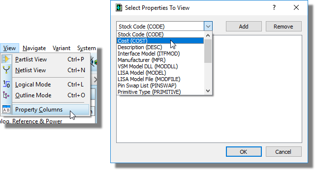
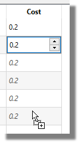
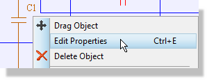
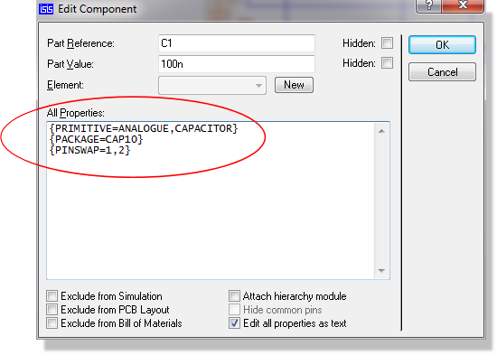
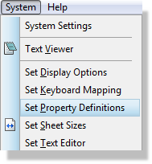

There are two distinct types of object property - system properties and user properties. The former comprise a set of reserved keywords which have special functions within Proteus itself, whereas the latter relate either to external programs, or may relate to your own particular use of the software (for example, the Bill of Materials report).
System properties are properties whose keywords have special meaning in Proteus . For example, the DEVICE property of a component object directly determines the library part assigned to it. Some of these properties are textual - e.g. component REF and VALUE labels are directly accessible from the Edit Component dialogue form, but others such as the aforementioned DEVICE property are manipulated as a result of graphical operations.
In general, you need only concern yourself with system properties if you wish to read their values with the Search and Tag command, or modify them with the Property Assignment Tool. For example, you might wish to tag all the 7400 components in your design. This requires you to know that the system property that will hold the library part name is called DEVICE.
Details of the system properties used by each type of object are given in the Object Specifics section of this documentation.
User Properties should not be entered via any method when working with managed libraries. The whole idea is that the managed library parts include managed properties that contain all the correct information. Only the librarian should make changes to the library parts as needed by releasing a new version of the library for users to update from.
Components, sub-circuits and VSM gadgets can carry an unlimited number of extra properties, in addition to their standard system properties. These user properties are held in a block of text known as a property block and consisting of lines such as:
SUPPLIER=XYZ Electronics
The most convenient and common method for editing user property blocks is via the spreadsheet interface in design explorer although you can also do so directly on the dialogue forms of the various objects themselves. In either case it's important to realise that you are making local changes to the design and not persistent changes to the library parts. A more stringent approach would be to correct/update the library parts via Library Manager so that the master devices were correct and then pick the updated parts back into the current schematic. Either method is fine and the decision may largely be one of company policy with respect local property changes.
One advantage of updating the library parts versus making local changes is that the Manage Changes command on the library menu will do a better job of handling design revisions.
See Also:
To edit user properties via Design Explorer
1) Add the properties to the component grid

2) Change the values

If you want to operate on only a subset of parts (for example change the package of all 10k resistors) then first use the search tab to filter the list of parts and then follow the procedure above.
See Also:
To edit an objects user properties individually:


User property keywords should, as a rule, consist of letters, numbers and underscores only. Under no circumstances should they contain spaces, commas, double quotes or equals signs (,"=).
In accordance with the general behaviour of text on the schematic, if a property assignment is enclosed in curly brackets ('{' and '}') then it will not be displayed on the screen. For example, entering:
{PRIMITIVE=DIGITAL}
will define an object as requiring digital simulation, but this text will not actually appear.
Occasionally, one may want just the value to appear, in which case you can do:
{MODFILE=}OPAMP
In theory you can put curly brackets in other places. However, when the Property Assignment Tool modifies property blocks, it works on the assumption that if used at all, curly brackets have been placed as shown in the above examples. If they have been placed elsewhere, then you may get unexpected results.
It is possible to provide extra details for specific user properties of a device. For example, common user component properties are PACKAGE and MODFILE. Given that appropriate Property Definitions have been created for the component libraries, these properties are displayed in their own fields on the Edit Component dialogue form. The property definitions include a description of the property, a data type (such as integer, floating point or string) and for numeric data types a valid input range. A default value may also be (and often is) specified.
This scheme makes it much easier to see what properties are valid for a particular model, and what those properties mean. It is also then possible to supply alternate package types and simulator models in a way that is obvious to the end user of a particular library part.
Properties which are not known for a particular device (or all properties for a device which does not have property definitions) still appear in the textual properties block as described above, and the scheme is thus backward compatible with old designs and/or library parts which do not have property definitions.
When adding and configuring properties via the Bill of Materials property editor rather than manually, the PROPDEFS are created and written for you at the point you create the BOM field.
You can view, edit and delete the current set of propdefs via the Set Property Definitions dialogue on the System Menu.
